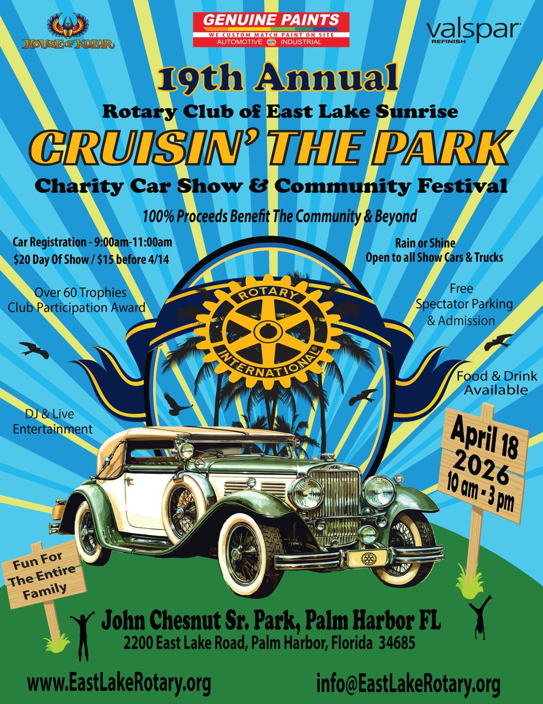

Community service
Food drives, the Oldsmar Cares pantry, shred events, and support for local clinics and shelters close to home.
We are business owners, retirees, and community members in Oldsmar and the East Lake area who put our time and skills to work for the people around us. Local projects, global causes, and good company over coffee.
 Habitat for Humanity build, Holiday FL
Habitat for Humanity build, Holiday FL
Rotary is where people who want to do good in the world come together and get it done. Our club has been part of life in Oldsmar and East Lake for years, meeting every week, raising funds for neighbors in need, and rolling up our sleeves for hands-on projects.
Rotary organizes its work around Avenues of Service. Here is where our club spends its energy.
Food drives, the Oldsmar Cares pantry, shred events, and support for local clinics and shelters close to home.
Reading benches and books for area schools, our free reading program, and mentoring the next generation of leaders.
We are part of Rotary's global effort to end polio and support clean water, health, and peace projects worldwide.

With the Miller Family Foundation, we deliver reading benches, books, and baskets to schools across the area, from Chi Chi Rodriguez Academy to Highpoint and Kings Highway Elementary.

Our shred events and World Polio Day activities raise funds and awareness for Rotary's global push to wipe out polio for good.
From Habitat for Humanity builds to mask drives for local schools, we go where the hands-on help is needed most.

Every year, classic cars, music, food, and families fill the park for our biggest fundraiser of the year. It is a great day out, and every dollar goes back into the community through our grants and projects.
19th annual show held April 18, 2026. Thank you to everyone who came out.
When you join us, you join 1.4 million Rotary members in more than 46,000 clubs around the world. Together, Rotary has helped reduce polio cases by 99.9% since 1988 and works every day on clean water, health, education, and peace.
Locally, that global reach starts with a few neighbors and a cup of coffee on Thursday morning.
There is no pressure and no cost to visit. Here is how most people get started with our club.
Join us any Thursday at 8 AM at Eve's Family Restaurant, or hop on Zoom. Come as a guest and see what we are about.
Meet the members, hear about current projects, and find the causes that fit what you care about.
When it feels right, become a member and start putting Service Above Self to work in your community.
Service Above Self.
The motto that guides every Rotary club, including ours.
Whether you want to volunteer, give, or just learn more, we would love to meet you.